The problem
Slouching is easy to miss while concentrating at a desk.
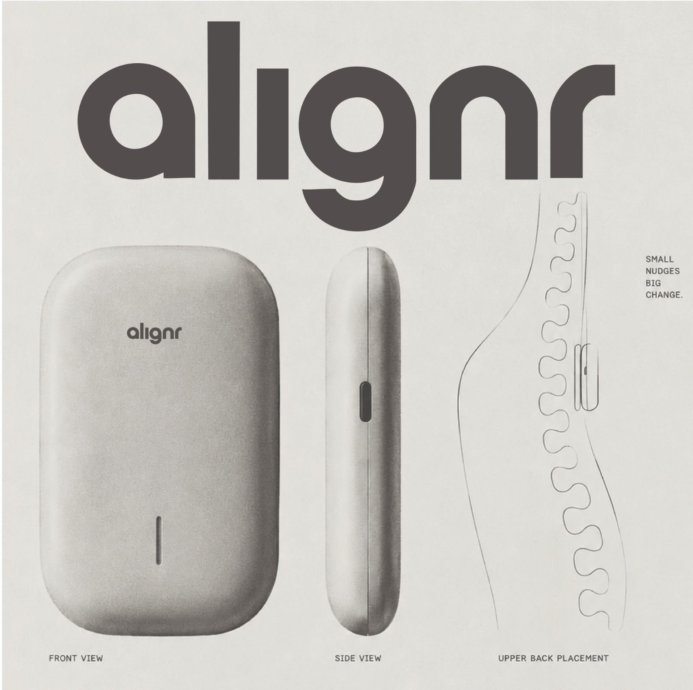
A wearable posture corrector exploring gentle, real-time feedback for everyday posture.
Slouching is easy to miss while concentrating at a desk.
An upper-back motion sensor detects sustained changes in posture.
A wearable patch gives a gentle cue to sit upright, without a screen or app.
Our physical computing module asked us to pick an everyday problem and build something that works. We kept coming back to how we sit. After hours at a desk, slouching becomes the default, and nobody notices the moment it starts.
About 64% of employees sit for more than nine hours a day. You start upright, lean in to read something, and stay there. Over time that leads to muscle imbalances, stiffness and back pain.
How might we encourage better sitting posture for desk-bound workers so that they avoid long-term back issues?
Slouching starts in the upper back.
Most slouching begins around the T6–T8 vertebrae, the middle of the thoracic spine. That gave us a stable spot for the sensor, right where the slouch begins.
Six ways of wearing the sensor: each solved one problem and introduced another. Compare the concepts below; the unused directions remain part of the process.
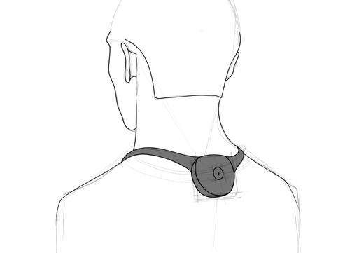
Hands-free, with built-in support.
Could cause neck discomfort and shift during movement.
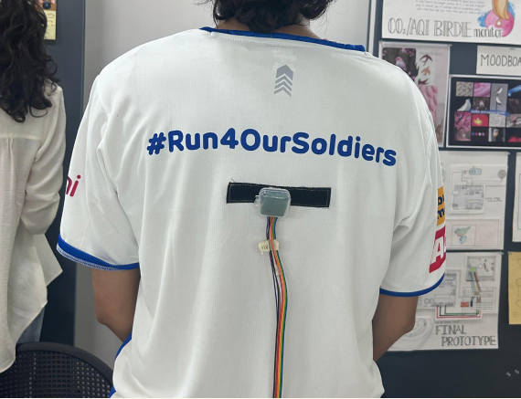
Reusable, comfortable and portable.
Detection depended on wearing the dedicated T-shirt; multiple garments would be needed.
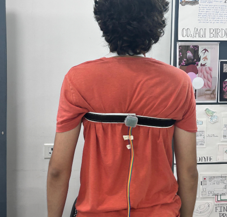
Reusable and portable, with stable positioning.
Restricted movement and became uncomfortable over long periods; fit was not comfortable for all users.
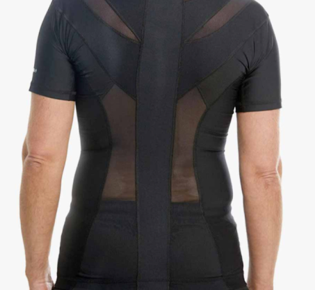
Supportive, breathable and sweat-absorbing.
Required precise sizing, difficult maintenance and was not ideal for all-day wear.
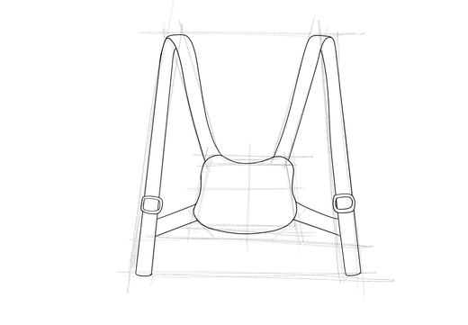
Secure, adjustable and reusable.
Bulky, slower to put on and potentially restrictive.

Lightweight, discreet and easy to apply.
The explored adhesive was not reusable and could irritate skin or come loose.
We sculpted shapes by hand to find something that sits comfortably against the back, then took the strongest ones into 3D. Click any image to see it larger.


digital renders


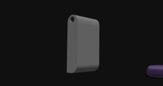
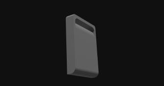

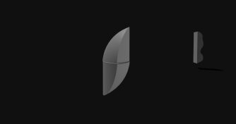
Follow the prototype’s signal: the MPU6050 measures movement, the Arduino checks it, and the display and buzzer communicate the result.
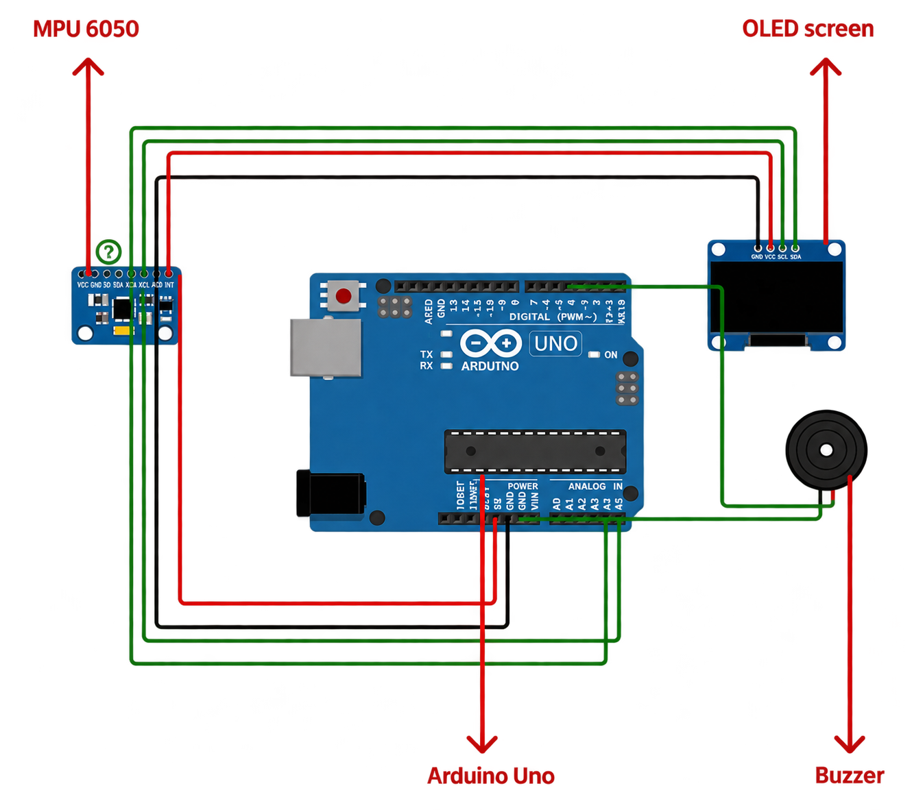
Prototype: OLED + buzzer, powered by 9V. The later compact direction explored a Seeed XIAO nRF52840 Sense, vibration motor, slider switch and 3.7V LiPo battery.
Choose a sitting position. A brief movement is ignored; staying slouched for 10 seconds triggers the prototype’s cue. Return upright to stop it.
Choose a slouched position to start the timer.
Original figures from our documentation. This illustrates the prototype’s timing, not a measurement of the viewer’s posture. The prototype used a buzzer; the later product direction explored vibration.
AlignR is a small patch worn on the upper back. It tracks the tilt of your spine, notices when a slouch lasts more than 10 seconds, and nudges you to sit up. No screen, no app.

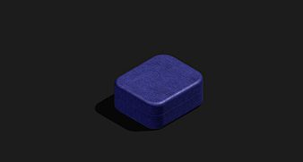